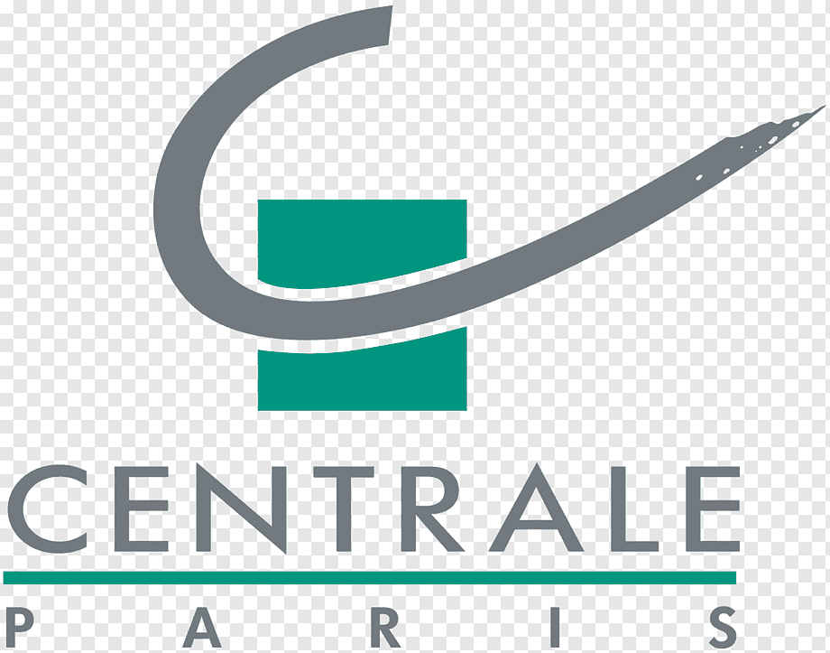

Languages
 French [Native]
French [Native]
English [Fluent]
 German [Intermediate]
German [Intermediate]
Strategic AI Leader with 11+ years of experience specializing in scaling Large Language Models (LLMs) and autonomous agentic workflows. Proven track record directing international teams (25+ members) to deploy production-grade AI systems.
Expert in Foundation Model fine-tuning (SFT/RLHF/DPO), RAG architecture, and MLOps at scale. Deeply focused on bridging the gap between research and high-impact business automation.
Led across 3 cross-functional teams globally
Revenue generated via AutoML platform
Manual labeling replaced by agentic workflows
Deployed to production globally
NielsenIQ (Label Insight) · Chicago, USA
NielsenIQ (Label Insight) · Paris, France
NielsenIQ (Label Insight) · Chicago, USA
Nielsen IQ · Chicago, USA
The Nielsen Company · Chicago, USA
The Nielsen Company · Paris, France
Air Liquide · Newark, USA
Lead AI Contributor
Community Leadership

Ecole Centrale Paris · Paris, France · 2009–2013
Selective Grandes Écoles program. Focus on Quantitative Research, Machine Learning, and Applied Math.
MIT Sloan School of Management · Cambridge, USA · 2011
Research in Supervised Learning Generalization. Courses: AI, Statistical Learning.
Contributor · MIT · arXiv:1405.7764
Author · AIChE Annual Meeting
Score: 910/1000
Associate
PMI
French [Native]
German [Intermediate]